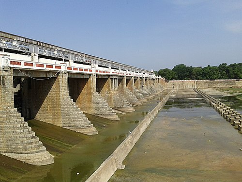

THIRUVALLUR
Poondi dam

Poondi Dam, also known as Sathyamurthy Sagar, is located near Tiruvallur in Tamil Nadu. It was built across the Kosasthalaiyar River to supply drinking water to Chennai. The dam is surrounded by scenic beauty and also serves as a popular picnic spot and source of irrigation for nearby villages.